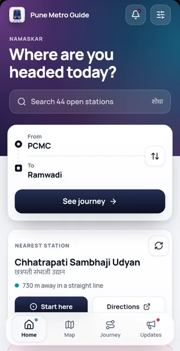

Places to visit by metro
Distances are in a straight line from the nearest open station. Places were chosen by hand; positions come from OpenStreetMap.
Heritage
- Aga Khan Palace
Ramwadi897 m Walk - Lal Mahal
Kasba Peth429 m Walk - Parvati Hill
Swargate1158 m Walk - Pataleshwar Cave Temple
Shivaji Nagar572 m Walk - Shaniwar Wada
PMC429 m Walk
Temples
- Belbag Mandir
Mahatma Phule Mandai342 m Walk - Chaturshrungi Mandir
Savitribai Phule Pune University390 m Walk - Dagdusheth Halwai Ganpati
Mahatma Phule Mandai400 m Walk - Gurusingh Sabha Gurudwara
Kasba Peth459 m Walk - Jangli Maharaj Mandir
PMC537 m Walk - Kasba Ganpati
Kasba Peth362 m Walk - Mahalaxmi Mandir, Sarasbaug
Swargate348 m Walk - Ohel David Synagogue (Lal Deval)
Pune Railway Station1179 m Walk - Omkareshwar Mandir
Chhatrapati Sambhaji Udyan182 m Walk - Osho International Meditation Resort
Bund Garden672 m Walk - Tambdi Jogeshwari
Mahatma Phule Mandai468 m Walk - Tulshibaug Ram Mandir
Mahatma Phule Mandai184 m Walk
Museums
- Bharat Itihas Sanshodhak Mandal
Mahatma Phule Mandai829 m Walk - Joshi's Museum of Miniature Railways
Paud Phata831 m Walk - Mahatma Phule Vastu Sangrahalaya
Chhatrapati Sambhaji Udyan458 m Walk - R K Laxman Museum
R K Laxman Museum Balewadi159 m Walk - Raja Dinkar Kelkar Museum
Mahatma Phule Mandai355 m Walk - Sawai Gandharva Smarak
Shivaji Nagar442 m Walk
Parks
- Bund Garden
Bund Garden143 m Walk - Chhatrapati Sambhaji Udyan
Chhatrapati Sambhaji Udyan60 m Walk - Peshwe Udyan
Swargate649 m Walk - Sarasbaug
Swargate505 m Walk - Udaan Biodiversity Park
Ramwadi947 m Walk
Theatres
- Balgandharva Rangmandir
Chhatrapati Sambhaji Udyan253 m Walk - Bharat Natya Mandir
Deccan Gymkhana820 m Walk - Ganesh Kala Krida Rangamanch
Swargate222 m Walk - Tilak Smarak Mandir
Mahatma Phule Mandai1001 m Walk - Yashwantrao Chavan Natyagruha
Anand Nagar784 m Walk
Stadiums
- Nehru Stadium
Swargate332 m Walk - Shree Shiv Chhatrapati Sports Complex, Balewadi
Mitcon Balewadi479 m Walk
Markets
- Mahatma Phule Mandai
Mahatma Phule Mandai75 m Walk
Malls
- Grand highstreet
Padmabhushan Chowk254 m Walk - Jewel Square Mall
Bund Garden322 m Walk - The KOPA
Kalyani Nagar711 m Walk - The Pavillion
Savitribai Phule Pune University993 m Walk
Cinemas
- Alka Talkies
Deccan Gymkhana486 m Walk - E-Square Multiplex
Agriculture College824 m Walk - E-Square Xion
Hinjawadi Phase-I212 m Walk - Gunjan Talkies
Yerwada223 m Walk - Inox
Ruby Hall Clinic653 m Walk - Laxminarayan Talkies
Swargate400 m Walk - Mangala Multiplex
PMC214 m Walk - PVR Cinemas, Grand Highstreet
Padmabhushan Chowk231 m Walk - PVR Icon, Pavilion Mall
Savitribai Phule Pune University939 m Walk - R Deccan Multiplex
Deccan Gymkhana222 m Walk - Rahul Cineplex
Shivaji Nagar342 m Walk - Vishal E-Square
PCMC370 m Walk
Railway stations
- Dapodi railway station
Dapodi282 m Walk - Kasarwadi railway station
Nashik Phata (Bhosari)157 m Walk - Pimpri railway station
PCMC713 m Walk - Pune Junction railway station
Pune Railway Station233 m Walk - Shivajinagar railway station
Shivaji Nagar180 m Walk
Bus stations
- PMC Bhavan PMPML bus station
PMC54 m Walk - Pimpri-Chinchwad (Vallabhnagar) bus stand
Sant Tukaram Nagar66 m Walk - Pune Station bus stand
Pune Railway Station258 m Walk - Swargate PMPML bus stand
Swargate80 m Walk - Swargate ST bus stand
Swargate165 m Walk
Hospitals
- Deccan Hardikar Hospital
Shivaji Nagar311 m Walk - Deenanath Mangeshkar Hospital
S.N.D.T. College733 m Walk - Inlaks and Budhrani Hospital
Bund Garden745 m Walk - Jehangir Hospital
Ruby Hall Clinic284 m Walk - Jupiter Hospital
Balewadi Phata678 m Walk - KEM Hospital
Kasba Peth800 m Walk - Manipal Hospital, Baner
Balewadi High Street722 m Walk - Poona Hospital
Garware College438 m Walk - Ruby Hall Clinic
Ruby Hall Clinic41 m Walk - Sancheti Hospital
Shivaji Nagar420 m Walk - Sassoon Hospital
Pune Railway Station594 m Walk
Colleges and universities
- BJ Medical College
Pune Railway Station329 m Walk - College of Agriculture, Pune
Agriculture College564 m Walk - College of Engineering Pune (COEP)
District Court428 m Walk - FTII
Paud Phata672 m Walk - Fergusson College
Chhatrapati Sambhaji Udyan1005 m Walk - Garware College
Garware College83 m Walk - Gokhale Institute of Politics and Economics
Deccan Gymkhana916 m Walk - IISER Pune
Aundh558 m Walk - MIT World Peace University
Anand Nagar968 m Walk - Modern College of Engineering
Chhatrapati Sambhaji Udyan611 m Walk - Ranade Institute
Deccan Gymkhana492 m Walk - SNDT Women's University
S.N.D.T. College222 m Walk - Savitribai Phule Pune University
Sakal Nagar871 m Walk
 Pune Metro Guide app · free on Android and iPhone
Pune Metro Guide app · free on Android and iPhone
Find the station for any place in Pune.
Search a landmark such as Shaniwar Wada to find its station, how far it is and walking directions in your maps app.
- Places by metro
- Nearest station
- Works offline

What's in the app · Unofficial, like this website.

Sources
- OpenStreetMap secondary · checked 9 November 2026